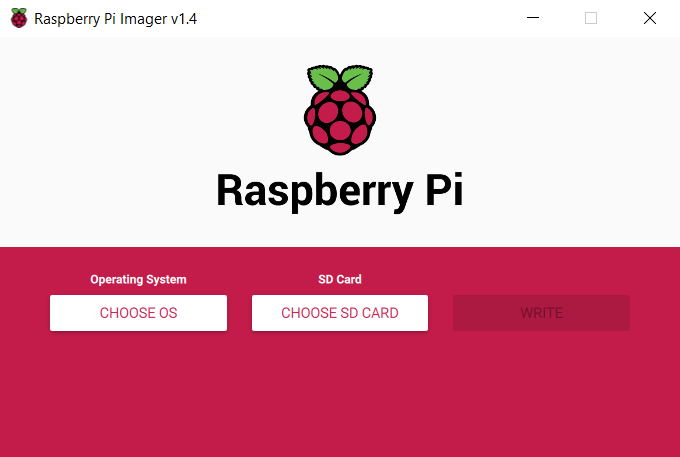
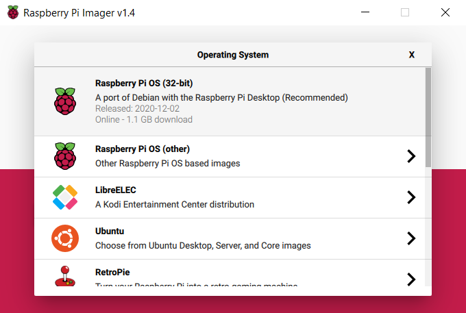
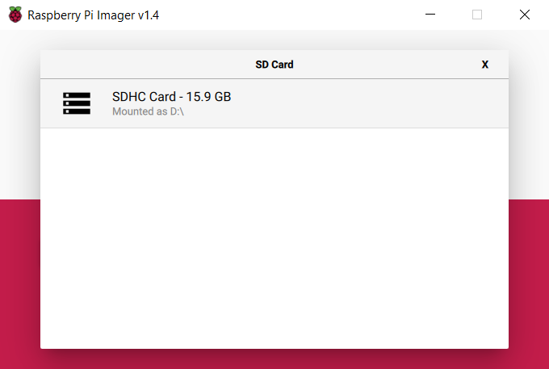
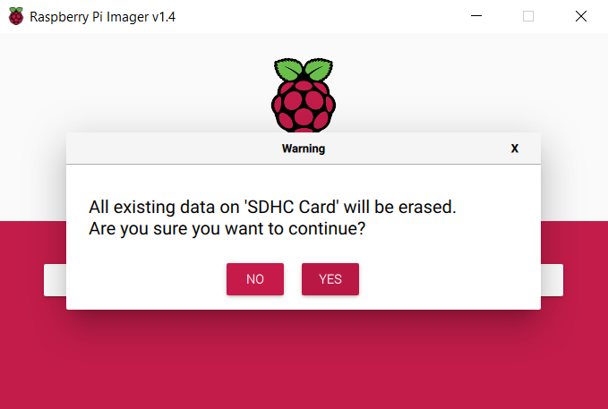
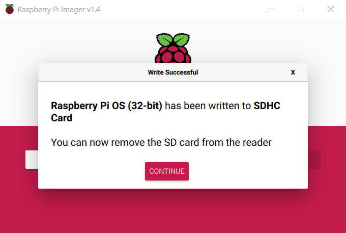

In this demonstration, Raspberry Pi OS will be used to image the microSD card. When you open the program, you should see an interface similar to this.
First, click the "Choose OS" button to see a list of operating systems. Choose the "Raspberry Pi OS (32-bit)" option (most likely the first option).
After choosing our operating system, we will need to select the SD card we want to use. Click "Choose SD Card" and select the microSD you wish to use.
Now you are ready to write the SD card. Click "Write". You might get a warning asking if you want to overwrite the previous data on the card. If you are okay to do so, select "Yes".
You will have to wait a bit for the SD card to be imaged. Once it is done, you should see a screen similar to this.
